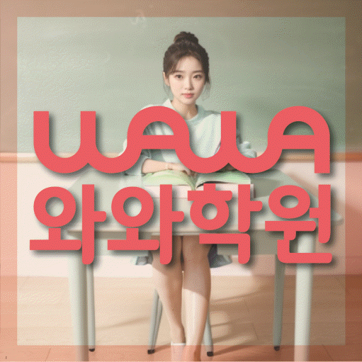

ENGLISH · MATH
구파발 영수학원
구파발 영수학원 선택 전 영어 오답 유형·개념 연결 진단, 학교 자료, 가능 학년과 센터 위치를 확인하세요. 실제 교재로 상담할 질문도 정리했습니다.
01 Quick answer
구파발 초·중·고 영어·수학 학습에서 먼저 확인할 핵심 답변
구파발 초·중·고 학습의 출발점은 분량을 늘리는 일이 아니라 영어 오답 유형과 개념 연결의 상태를 자료로 구분하는 것입니다. 최근 영어·수학 교재·학교 자료·오답 기록을 준비하면 와와학습코칭센터 은평점 상담에서 현재 수준과 다음 점검일을 구체적으로 비교할 수 있습니다.
확인 기준
구파발 초·중·고 학생 상담에서는 영어 오답 유형·개념 연결의 현재 상태를 실제 자료에서 나누어 확인합니다.


 010-6839-8283
010-6839-8283학습 답변 요약
구파발 초·중·고 영어·수학 학습 자료를 기준으로 진단, 학습 순서, 학교·센터 사실과 상담 질문을 차례로 살펴봅니다.
구파발 초·중·고 영어·수학 학습의 출발점을 찾는 방법
구파발 초·중·고 과정의 우선순위는 잘한 단원보다 멈춘 과정에서 찾습니다. 어휘·문법·독해 중 어디에서 같은 실수가 이어지는지를 살핀 뒤 정의와 공식을 말로 설명한 뒤 문제에 적용하는지를 이어 확인하는 순서가 알맞습니다.
첫 자료에서는 ‘첫 풀이와 다시 푼 답 사이에 달라진 근거’부터 살펴보고, 별도 기록에서는 ‘학습 시작 시각과 완료 여부를 적은 주간 기록’도 확인하세요. 두 자료의 차이가 구파발 영수학원 상담에서 첫 학습 행동을 정하는 근거가 됩니다.
구파발 영수학원 상담에서 정하는 조건부 4주 계획
구파발 초·중·고 학습의 첫 달은 현재 자료를 읽는 기간으로 사용할 수 있습니다. 첫 풀이와 다시 푼 답 사이에 달라진 근거, 기본 문제와 조건이 달라진 문제의 풀이 근거와 실제 완료 분량을 비교해 다음 계획을 정합니다.
한 주의 계획은 학교 일정이 바뀌면 함께 조정되어야 합니다. 최근 영어·수학 교재·학교 자료·오답 기록을 기준으로 집중할 범위와 이어 갈 복습 내용을 나누어 두세요. 구파발 학부모가 초·중·고 영어·수학 상담을 준비한다면 이 항목도 따로 메모해 두세요.
은진초·은빛초·진관초 자료로 살펴보는 구파발 영수학원 학습 범위
구파발 영수학원 페이지에 표시된 은진초·은빛초·진관초는 상담 준비를 위한 참고 정보입니다. 학교명만으로 수업 가능 여부를 판단하지 말고 학생의 최근 영어·수학 교재·학교 자료·오답 기록을 센터의 현재 개설 범위와 함께 확인해야 합니다.
공개 자료에는 일부 과목의 가능 학년이 기재되지 않았습니다. 와와학습코칭센터 은평점에서 희망 과목·학년·요일과 실제 개설 범위를 확인하세요. 구파발 초·중·고 영어·수학 계획에서는 이 내용을 실제 학습 기록과 대조합니다.
구파발 영수학원에서 과목별 병목을 구분하는 방법
구파발 영수학원 상담에서 한 번에 많은 과제를 약속할 필요는 없습니다. 영어 오답 유형과 개념 연결 중 먼저 바꿀 행동 하나를 고르고 다음 점검일에 실제 기록을 확인하면 됩니다.
와와학습코칭센터 은평점에 문의할 때는 설명 방식, 독립 연습과 피드백 주기를 함께 물어보세요. 실제 수업 시간과 반 편성은 센터의 현재 운영 범위에 따라 달라질 수 있습니다. 이 내용은 구파발 초·중·고 영어·수학 수업 조건을 비교할 때 확인할 질문으로 사용할 수 있습니다.
구파발 초·중·고 학생에게 맞는 영어·수학 점검 기준
구파발 영수학원의 추천 학생 기준은 성적 구간이 아니라 영어 오답 유형과 개념 연결의 실행 상태입니다. 최근 자료에서 두 항목이 어떻게 나타나는지 확인한 뒤 판단하세요.
과제량이 많은 수업보다 학생이 ‘매일 할 최소 분량과 다시 볼 항목을 나누기’ 활동을 해 보고 확인받을 수 있는지가 중요합니다. 실제 운영 주기와 보완 방식은 센터에 직접 질문해야 합니다. 구파발 학생의 초·중·고 영어·수학 흐름에 적용할 때는 현재 교재와 실행 기록을 함께 살핍니다.
구파발 영수학원 등록 판단 전에 확인할 질문
구파발 영수학원 상담 전에는 학생의 실제 자료, 어려웠던 과정과 가능한 일정을 한 장에 정리하세요. 아래 네 항목을 준비하면 학습 문제와 센터 운영 조건을 섞지 않고 질문할 수 있습니다.
과목별 가능 학년은 제공 자료에서 모두 확인되지 않습니다. 희망 과목·학년과 실제 개설 여부는 와와학습코칭센터 은평점에서 확인하세요. 확인되지 않은 시간표, 차량·주차와 보강 운영은 페이지에서 단정하지 않습니다.
- 현재 자료구파발 영수학원 확인용으로 최근 영어·수학 교재·학교 자료·오답 기록에서 영어 오답 유형과 개념 연결이 드러난 부분을 표시합니다.
- 오답 근거구파발 초·중·고 영어·수학 상담에는 첫 풀이와 다시 푼 답 사이에 달라진 근거와 학습 시작 시각과 완료 여부를 적은 주간 기록을 서로 나누어 가져갑니다.
- 가능 일정구파발 초·중·고 영어·수학 학습에 필요한 통학 시간, 학교 일정과 가정 복습 시간을 적습니다.
- 센터 확인구파발 영수학원 등록 전에는 와와학습코칭센터 은평점의 과목·학년·시간표·교습비·보완 방식을 확인합니다.
02 Parent perspective
구파발 초·중·고 영어·수학 학부모 상담 상황
아래 구파발 초·중·고 영어·수학 상담 장면은 실제 이용 후기나 특정 학생의 성과가 아닌 준비용 가상 예시입니다. 학습 결과는 학생의 출발점과 실천 정도에 따라 달라질 수 있습니다.
가정 학습 시간이 일정하지 않은 구파발의 초·중·고 영어·수학 학습 상황을 가정했습니다. 학부모는 많은 과제를 요청하기보다 ‘완료한 분량과 남은 질문을 짧게 적기’ 활동을 실천할 수 있는 분량과 다음 점검일을 상담에서 확인합니다.
구파발에서 초·중·고 영어·수학 학습 시간이 겹치는 가정의 상담 상황입니다. 학부모는 영어 오답 유형에 집중할 시간과 개념 연결을 복습할 시간을 구분하고 일주일 뒤 어떤 기록으로 계획을 재검토할지 묻습니다.
03 FAQ
구파발 초·중·고 영어·수학 자주 묻는 질문
학생 자료, 가능 학년과 실제 이용 조건을 나누어 답했습니다.
구파발 초·중·고 영어·수학 상담에서는 무엇을 먼저 진단하나요?
초·중·고 영어·수학 상담에서 사용할 첫 진단 기준입니다. 최근 점수만 보지 말고 어휘·문법·독해 중 어디에서 같은 실수가 이어지는지와 정의와 공식을 말로 설명한 뒤 문제에 적용하는지를 먼저 살핍니다. 구파발 학생의 최근 영어·수학 교재·학교 자료·오답 기록을 가져오면 두 항목이 실제 학습에서 어떻게 나타나는지 구분할 수 있습니다.
구파발의 초·중·고 영어·수학 가능 학년과 실제 수업 일정은 어떻게 확인하나요?
초·중·고 영어·수학 학년·시간표 정보는 공개 자료와 상담 확인 내용을 구분합니다. 공개 자료에는 영어 초3·초4·초5·초6·중1·중2·중3·고1 범위가 기재되어 있습니다. 수학 가능 학년은 와와학습코칭센터 은평점에 희망 학년을 알려 확인하세요. 실제 반 편성·요일도 함께 확인해야 합니다. 구파발 초·중·고 영어·수학 학습에서는 실제 자료를 확인한 뒤 판단해야 합니다.
구파발에서 초·중·고 영어·수학 학습을 하는 학생의 과제량은 어떤 기준으로 정하나요?
초·중·고 영어·수학 과제량은 학생이 수행하고 다시 확인할 수 있는지를 기준으로 비교합니다. 많은 분량보다 ‘오답을 유형별로 나누고 다시 볼 날짜 정하기’와 ‘개념 한 줄과 대표 문제를 한 묶음으로 정리하기’ 두 활동을 실제로 마칠 수 있는지를 먼저 봅니다. 완료 기록을 다음 점검에서 확인하고 학교 일정과 가정 학습 시간에 맞춰 분량을 조정하세요. 이 답변은 구파발에서 초·중·고 영어·수학 상담을 준비할 때 적용할 수 있습니다.
구파발 초·중·고 영어·수학 수업 시간과 결석 시 보완 방식은 어떻게 확인하나요?
초·중·고 영어·수학 시간표·보완 방식은 현재 센터 운영 범위를 직접 확인해야 합니다. 시간표·반 편성·보완 운영은 센터별로 다를 수 있어 페이지에서 확정하지 않습니다. 구파발 학생의 학교 일정과 통학 시간을 알려 주고 가능한 요일, 피드백 주기와 결석 시 절차를 함께 질문하세요.
구파발 초·중·고 영어·수학 상담의 교습비와 센터 주소는 어디에서 확인하나요?
구파발 영수학원 페이지의 제공 센터 사실을 기준으로 답합니다. 제공된 센터 주소는 서울특별시 은평구 진관동 진관2로 29-21 드림스퀘어 제 8층 804호 805호입니다. 제공 자료에는 영어 초3·초4·초5·초6·중1·중2·중3·고1 범위가 기재되어 있으며, 수학 가능 학년은 상담에서 확인해야 합니다. 비용 자료는 센터별 교습비 확인 버튼으로 연결됩니다. 운영 조건은 시점에 따라 달라질 수 있으므로 과목·학년·시간표를 등록 전에 한 번 더 확인하세요.
04 Related
구파발 관련 학원·상담 페이지
같은 지역의 과목 조합과 학년 카테고리, 앞뒤 지역 안내를 함께 확인하세요.